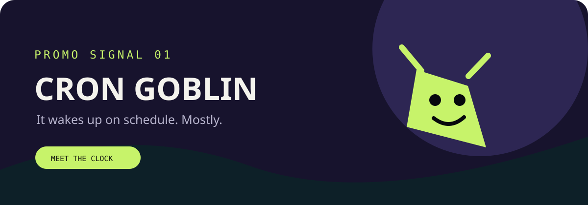
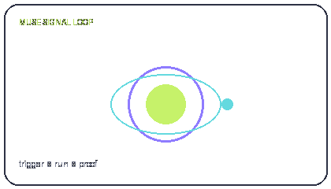

SELECT A CARD TO BEGIN
Where should we
tune in?
Every idea in MUSE School is a signal. Select a lesson from the left to open the field notes here.
Tip: press / to search
A living primer on how Muse schedules work, remembers context, moves through lanes, and knows when a result is actually done.


Start with the vocabulary, then trace a run from clock to proof. Your progress is kept locally in this browser.
Every idea in MUSE School is a signal. Select a lesson from the left to open the field notes here.